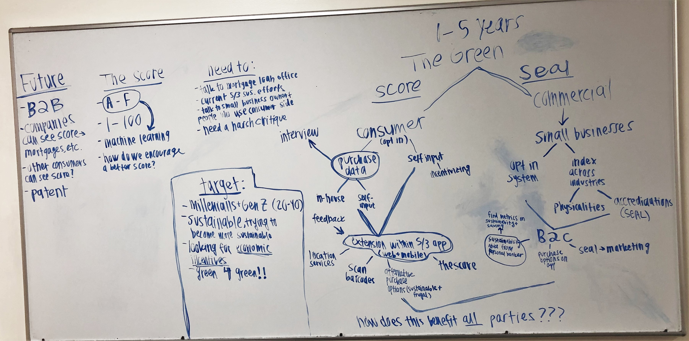

Fifth Third’s new Green Score is the beginning of living a sustainable life. Seamlessly integrated into your online banking, the Green Score uses your purchase data to assess your sustainability efforts. We have power as individuals to make a difference with the purchases we make, and Fifth Third’s Green score helps you to see your impact while also guiding you to improve and live more sustainably.
The typical Green Score user is a Millennial or member of Generation Z. These 20-40 year olds are either currently living sustainable lives or looking for ways they can become more sustainable. Although sustainability is an important aspect of their lives, economic incentives drive their purchasing behavior.
Lots and lots of ideation and brainstorming...
The Green Score is an optional service that uses state-of-the-art technology to analyze your purchase data and assess your sustainability efforts. Using in-house data and self-submitted purchase information, users can access their Green Score in-app and on mobile and desktop.
Scan barcodes of items you’ve bought, see local sustainable companies, and compare options to choose sustainable products. The Green Score helps you in your journey towards living more sustainably.

The Green Seal is an optional service for our commercial clients, specifically small businesses to market themselves to current and potential customers as a company focused on being sustainability stewards. These B2C companies have the opportunity to receive a Green Seal after being validated as a noteworthy, sustainable business. Following the Seal’s approval, the businesses have the opportunity to receive sustainability advice from their Fifth Third personal banker. This advice will provide them more sustainable and financially feasible substitutes for current business processes.
Sustainability goes beyond the individual, and companies play a role in maintaining the world we live in. The Green Seal helps companies in this process, and it shows consumers which companies are as dedicated as they are to the planet.
This is more than just a score. This is an insight into your actions and their impact on the planet and those around us. This is a guide to help drive meaningful change and create a world for future generations. The Green Score is a tool for today that will help preserve our future.